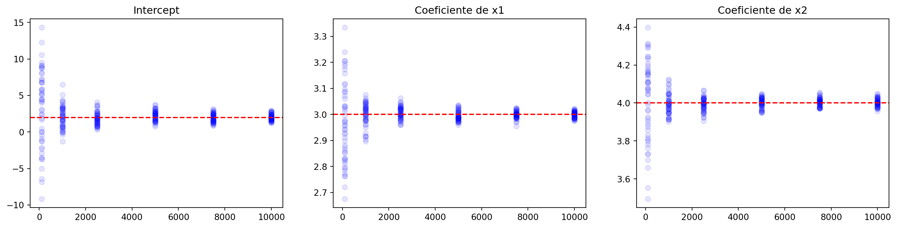

import numpy as np
import statsmodels.api as sm
from statsmodels.regression.linear_model import OLSExperimento con multicolinealidad
datos
Experimentos con multicolinealidad para ver si siempre es tan mala como se dice en la regresión lineal
Multicolinealidad en la regresión lineal con muestras grandes
Tienes una variable \(y\) que depende de dos variables \(x_1\) y \(x_2\). Pero \(x_2\) es una combinación lineal de \(x_1\).
n = 10000
x1 = np.random.normal(50, 10, n)
x2 = 0.5 * x1 + np.random.normal(0, 5, n)
y = 2 + 3 * x1 + 4 * x2 + np.random.normal(0, 10, n)Por si hay alguna duda:
np.corrcoef(x1, x2)[0, 1]0.7038232389104401¿Qué pasa si usas \(x_1\) y \(x_2\) en una regresión lineal?
X = np.column_stack((x1, x2))
X = sm.add_constant(X)
modelo = OLS(y, X).fit()
print(modelo.summary()) OLS Regression Results
==============================================================================
Dep. Variable: y R-squared: 0.967
Model: OLS Adj. R-squared: 0.967
Method: Least Squares F-statistic: 1.469e+05
Date: Fri, 24 Jan 2025 Prob (F-statistic): 0.00
Time: 22:45:36 Log-Likelihood: -37133.
No. Observations: 10000 AIC: 7.427e+04
Df Residuals: 9997 BIC: 7.429e+04
Df Model: 2
Covariance Type: nonrobust
==============================================================================
coef std err t P>|t| [0.025 0.975]
------------------------------------------------------------------------------
const 2.5285 0.507 4.991 0.000 1.535 3.522
x1 2.9859 0.014 213.616 0.000 2.959 3.013
x2 4.0136 0.020 203.519 0.000 3.975 4.052
==============================================================================
Omnibus: 0.917 Durbin-Watson: 2.006
Prob(Omnibus): 0.632 Jarque-Bera (JB): 0.880
Skew: -0.016 Prob(JB): 0.644
Kurtosis: 3.034 Cond. No. 292.
==============================================================================
Notes:
[1] Standard Errors assume that the covariance matrix of the errors is correctly specified.Pues aparentemente nada. Los coeficientes son los esperados y las \(t\)-stats son altas.
Multicolinealidad en la regresión lineal con muestras pequeñas
Antes tenías una muestra de tamaño py n. Vamos a cambiar eso.
n = 100
x1 = np.random.normal(50, 10, n)
x2 = 0.5 * x1 + np.random.normal(0, 5, n)
y = 2 + 3 * x1 + 4 * x2 + np.random.normal(0, 10, n)Con estos datos, aparentemente los mismos pero con menor muestra, ajusto la regresión.
X = np.column_stack((x1, x2))
X = sm.add_constant(X)
modelo = OLS(y, X).fit()
print(modelo.summary()) OLS Regression Results
==============================================================================
Dep. Variable: y R-squared: 0.963
Model: OLS Adj. R-squared: 0.962
Method: Least Squares F-statistic: 1247.
Date: Fri, 24 Jan 2025 Prob (F-statistic): 6.37e-70
Time: 22:45:36 Log-Likelihood: -360.04
No. Observations: 100 AIC: 726.1
Df Residuals: 97 BIC: 733.9
Df Model: 2
Covariance Type: nonrobust
==============================================================================
coef std err t P>|t| [0.025 0.975]
------------------------------------------------------------------------------
const 3.7605 5.572 0.675 0.501 -7.299 14.820
x1 2.9353 0.132 22.162 0.000 2.672 3.198
x2 4.0783 0.167 24.419 0.000 3.747 4.410
==============================================================================
Omnibus: 2.221 Durbin-Watson: 1.894
Prob(Omnibus): 0.329 Jarque-Bera (JB): 1.658
Skew: 0.187 Prob(JB): 0.436
Kurtosis: 3.508 Cond. No. 352.
==============================================================================
Notes:
[1] Standard Errors assume that the covariance matrix of the errors is correctly specified.Los coeficientes de \(x_1\) y \(x_2\) no son horribles, pero el intercept ya no tiene sentido.
Incertidumbre
Los resultados de la regresión pueden mejorar, no solo por tener más datos, sino simplemente por una muestra que encaje mejor.
Así que vamos a generar muchas muestras, de distintos tamaños, y vemos en cada una cómo cambian los coeficientes.
n_sizes = np.arange(100, 1100, 100)
runs_per_size = 100
coeficientes = np.zeros((len(n_sizes), runs_per_size, 3))
for i, n in enumerate(n_sizes):
for j in range(runs_per_size):
x1 = np.random.normal(50, 10, n)
x2 = 0.5 * x1 + np.random.normal(0, 5, n)
y = 2 + 3 * x1 + 4 * x2 + np.random.normal(0, 10, n)
X = np.column_stack((x1, x2))
X = sm.add_constant(X)
modelo = OLS(y, X).fit()
coeficientes[i, j] = modelo.params
coeficientes[:, :, 0]array([[-3.65290965e+00, -9.63981626e+00, -1.16311997e+00,
3.77657319e+00, 5.67091244e+00, -3.18085389e-01,
2.51963253e+00, 3.46345696e+00, -1.88292929e+00,
-5.50967494e-01, -3.10015437e+00, -2.23474467e+00,
1.08598586e+01, 1.22112110e+00, 2.83698686e-01,
3.77431031e+00, -2.27607287e-01, 4.94381420e+00,
2.09464528e+00, -3.72172911e+00, 1.11022958e+00,
-1.55466157e+00, 1.09212895e+01, -3.09778223e-01,
2.00244337e-01, -1.15880562e+00, -2.32633841e+00,
-2.17357385e+00, 9.78286717e-01, 1.65848858e-01,
3.37638930e-01, 6.32368652e+00, 8.71186424e+00,
2.64753305e+00, 4.54184953e+00, 1.54422191e+00,
-5.95225471e+00, 8.84360884e-01, 4.36441274e+00,
1.15622087e+00, 2.64798644e+00, -2.19322481e+00,
-9.34036230e+00, 5.99632777e+00, 2.34125239e-01,
3.62996594e+00, -2.08958695e+00, -2.29667335e+00,
2.49539832e+00, 4.17790362e+00, -4.44638226e-01,
6.90354098e+00, 1.63442277e+00, 1.11108006e+01,
4.17155749e+00, 8.18668801e-01, 2.91906623e+00,
2.63984718e+00, 5.66927302e+00, -3.80347699e-01,
-1.01652719e+01, -2.45448676e+00, -8.97129634e-01,
1.50039438e+00, -6.38781333e+00, -7.92382824e-01,
1.00748259e+01, 5.06911877e+00, 1.93758439e-01,
-1.19670991e+01, 2.28168379e+00, -2.23546185e+00,
4.54280842e+00, 3.22414246e+00, 9.82295466e-01,
2.27393339e-01, 5.30613468e+00, 2.13375065e+00,
4.89549628e+00, 4.26558435e+00, 7.09709021e+00,
-6.38287290e+00, -3.47174071e+00, 8.74294363e+00,
8.12592029e-01, 4.57792543e+00, 5.57446632e+00,
7.21655363e+00, 3.84384975e+00, -4.12134335e+00,
4.40209057e+00, 3.67746846e+00, -1.95864503e+00,
5.97427873e+00, -5.12996659e+00, 1.09122638e+01,
3.72671316e+00, 2.17052400e+00, -2.43458395e+00,
-2.33048637e+00],
[-5.45935733e+00, 5.20923581e-01, 2.58648074e+00,
3.43948165e-01, 4.49385264e+00, 3.60018308e+00,
2.55108243e+00, 8.97859737e+00, 2.01878668e+00,
-1.28994925e+00, 3.91179487e+00, 3.02816728e+00,
4.54322521e+00, 2.07539368e+00, 4.93765997e+00,
3.33136101e-01, -5.54819501e+00, -2.01961268e+00,
1.87950989e+00, -9.55472637e-01, 5.57401150e+00,
1.64787740e+00, -3.90861318e-01, 9.74821664e+00,
-3.69336681e+00, 7.61035955e+00, -1.66091706e+00,
1.02057667e+00, 3.24002883e-01, 7.69073477e+00,
2.59180663e+00, 6.44913263e+00, 4.86621592e+00,
-4.24700879e-01, -1.89855849e+00, -6.50287389e+00,
1.61048075e+00, 3.90537229e+00, 4.33433478e+00,
1.07737896e+01, 4.23424759e+00, 3.19212969e+00,
5.04820021e-01, 9.13396169e-01, -2.85230181e+00,
2.18170818e+00, 6.06138261e+00, -1.04554426e+00,
-5.40003751e+00, 1.49475285e+00, 1.04559393e+01,
6.86033510e+00, 3.41236653e+00, 1.78970053e+00,
-1.95958355e+00, -1.98194879e+00, 1.66468494e+00,
6.54364048e+00, 6.60284089e+00, -2.74422684e+00,
-3.31215550e+00, -1.42779978e+00, 3.36347340e+00,
5.21219283e+00, -8.78682376e-01, 4.35088321e+00,
3.63514555e+00, 5.72660065e+00, 9.45596305e-02,
4.89108667e+00, 4.96507996e+00, 4.11134768e+00,
5.43564440e+00, 2.01741014e+00, 3.91229988e-01,
1.35907840e+00, -1.29101431e+00, 4.26267458e+00,
-1.29769993e+00, -1.00028477e+00, 4.61427146e+00,
3.51013630e+00, 4.01109434e+00, 7.11478628e+00,
1.89397988e+00, -2.14279327e+00, 5.87408970e+00,
-4.06374285e-01, -8.03704166e-01, 1.94374106e+00,
-6.17103353e-02, 7.05842225e+00, 3.09609064e+00,
1.75446676e+00, 4.62876429e+00, 2.80061967e+00,
2.77505774e+00, -2.89879416e+00, -1.28406026e+00,
-8.31751702e-01],
[ 4.03154529e+00, 1.19042915e+00, 1.83372467e-01,
5.72062483e-01, -2.74538082e+00, 2.74965431e-01,
2.02313459e+00, 1.92954595e+00, 7.54021454e+00,
5.00055038e+00, 5.27099526e+00, 6.35222312e+00,
1.39907369e+00, -3.16090429e-01, 1.92128774e+00,
-3.89289920e-01, -1.15426426e+00, 2.77659858e+00,
1.70671725e+00, 1.47035462e+00, 6.85159919e+00,
6.31684933e+00, 1.57167773e+00, 2.44431392e+00,
6.26635071e+00, 4.54391559e+00, -1.33401267e+00,
2.41917740e+00, -5.77785235e+00, 5.64777357e+00,
2.22595332e+00, -1.66612426e+00, -2.37230351e-01,
1.00846551e+00, 1.07563297e+00, -6.56503238e-01,
4.10739864e+00, 5.17621292e+00, 3.95743603e+00,
2.28254767e-01, 3.42739420e+00, 4.92748821e-01,
-2.42142440e+00, -2.74280226e+00, -2.06234126e+00,
2.58051017e+00, 2.40381749e+00, 5.06727165e+00,
5.72349516e+00, 4.12182992e+00, 6.81871447e+00,
4.62947282e+00, -1.60242206e+00, 4.28742171e+00,
7.86848436e+00, 8.46594558e+00, 5.70574817e+00,
-6.44868366e-01, 2.83703455e+00, 3.17754131e+00,
-1.83990522e+00, -4.30150496e-01, 5.43440529e-01,
-8.60409523e-01, 3.30396606e+00, -2.76341116e+00,
-2.33573293e+00, 5.16205919e+00, -1.37124844e+00,
-1.70628715e+00, 1.12654859e+01, 2.44615406e+00,
-4.39300186e+00, 8.40795832e+00, -6.08933500e+00,
3.51080578e+00, -1.56009685e+00, 2.60288476e+00,
9.25403540e-01, 1.61288763e+00, 4.05640829e+00,
4.42397566e+00, -1.92021396e+00, 1.83540784e+00,
-8.72866460e-01, -1.27590091e+00, 3.99409276e+00,
5.32436374e+00, 3.92109779e+00, 3.57809948e+00,
3.21285132e+00, 4.41034205e+00, 9.28528989e+00,
-3.57764655e-01, 2.83583755e-02, 2.81079297e+00,
-3.73857027e-01, -6.12101126e-01, 3.86485906e-01,
1.95138221e+00],
[ 4.50296368e+00, 7.23516492e+00, 1.52829834e+00,
2.46809873e+00, 1.10143753e+00, 1.54508937e+00,
2.79002384e+00, 4.07410757e+00, 1.66178520e+00,
4.19059854e+00, 4.21090161e+00, 3.18359263e+00,
1.60736428e+00, 2.59321483e-01, 2.58752606e+00,
3.81399406e+00, 2.77583740e+00, 3.20325013e+00,
3.60784905e+00, 2.07428055e+00, 2.32830415e+00,
2.72184494e+00, 3.86379501e-01, 1.41133183e+00,
-4.67371109e+00, -1.11750090e+00, 4.48939922e+00,
8.56262888e-01, 2.47552283e+00, 7.51101043e+00,
-2.31991861e+00, -3.87187171e+00, 1.98780731e-01,
2.30513071e+00, 3.11073717e+00, -3.20653938e-01,
8.55551659e+00, 2.14007579e+00, -9.44914938e-01,
4.00480530e+00, 4.37077216e-01, 4.48747833e+00,
4.45439932e+00, 5.79787708e+00, 2.01638140e+00,
3.92200721e+00, -1.21491474e+00, 3.21191972e+00,
1.20013062e+00, 4.35525642e+00, 2.28973211e+00,
3.30556133e+00, 5.23996801e+00, -3.67862573e+00,
1.56280264e+00, 1.21567976e+00, 3.32735348e+00,
5.12550754e-01, 2.51357193e+00, 2.04246541e+00,
2.96982275e+00, 4.50137998e-01, 4.15724727e+00,
5.61269149e+00, 2.95389477e+00, 1.91443454e+00,
4.75681800e+00, -1.36729957e+00, 8.13956314e-01,
5.22474168e-01, -2.27400263e+00, 1.79025263e+00,
-6.91489020e-02, -1.94829643e+00, -2.66505756e+00,
5.53110130e+00, 6.91514257e+00, -8.97088451e-01,
-6.22988127e-01, 2.65357669e+00, 4.47586593e+00,
5.89932833e+00, 2.81077567e+00, -4.74449850e-01,
1.72701837e+00, 3.25563901e+00, 3.47074261e+00,
-3.37169468e+00, 6.06904221e+00, -1.23550136e+00,
2.97203037e+00, 3.83727235e+00, 2.43799381e+00,
9.25682576e-01, 3.54080760e+00, 2.68875835e-01,
4.47607784e-02, 2.58851100e+00, 1.90565638e+00,
7.47231471e-01],
[ 5.48037010e+00, 8.36224335e-01, 9.34512283e-01,
9.55851536e-01, 3.69023143e+00, 1.79232836e+00,
2.21590402e+00, 2.33843692e+00, 1.44010565e-01,
4.72590059e+00, -1.18090371e+00, 1.71091015e+00,
-2.62423885e+00, 2.32835338e+00, 1.06999824e+00,
3.52303070e+00, 2.59251269e+00, 2.64791683e+00,
1.97086793e+00, 1.98443797e+00, -1.50579197e+00,
6.52579819e+00, 2.43163425e+00, -6.55766554e-01,
2.71154929e+00, 7.06473911e-01, 4.15765902e+00,
6.00858735e+00, 2.78789554e+00, 1.55424734e+00,
5.65570739e+00, 3.62153651e+00, 4.74273787e+00,
2.82105243e+00, -3.44095861e-01, 1.78048765e+00,
-1.65061752e+00, 1.16434032e+00, 3.55681227e+00,
2.36587773e-01, -1.37116309e-01, 5.00294738e+00,
4.93904639e+00, 1.08640756e+00, 1.24460417e+00,
-5.24905875e-01, -3.29419009e-01, 1.12854163e+00,
6.85666538e-01, 2.93763382e+00, 3.59484867e+00,
3.55715464e+00, 2.00942384e+00, 2.19870679e-01,
4.07000381e+00, 2.92112260e+00, 1.15456966e+00,
4.35561845e+00, -1.80595550e-01, 3.34852160e+00,
1.61266040e+00, 4.30008711e+00, -2.06557662e+00,
3.71762384e+00, 3.45679539e+00, 2.50086535e+00,
1.83221961e+00, 6.16813194e+00, 3.37332935e-01,
8.24717696e+00, 9.78515319e-01, 3.81494602e+00,
5.48040401e-01, -4.90255476e-02, 2.40354608e+00,
2.14990445e+00, 2.23072063e+00, 5.51281564e+00,
1.35776580e+00, 3.94683027e+00, 1.51288122e+00,
-2.51596347e+00, 2.87885932e+00, 2.41463042e+00,
4.40273046e+00, 6.06327149e+00, 1.50208133e+00,
8.11864293e+00, -9.01865932e-01, 3.57250251e+00,
3.77389544e+00, 1.49075344e+00, 5.89624935e-01,
2.53772246e+00, 2.52224116e+00, 5.40227927e+00,
2.10349503e+00, 1.40120945e+00, -3.30117340e+00,
5.00989582e+00],
[ 2.06431943e+00, 2.54283582e+00, 1.06023006e+00,
8.28554985e-01, 5.42763002e+00, 3.34632679e+00,
2.40835748e+00, 2.46483296e+00, 4.00506321e+00,
2.59546934e+00, 4.99993160e+00, 9.35058986e-01,
6.09477068e-01, 3.99403371e+00, 2.33337296e+00,
5.00077493e-02, 8.15502007e-01, 2.66797650e+00,
5.76389427e+00, 1.85975305e+00, -6.77538941e-02,
3.15932401e-01, 3.49812926e+00, 3.24917071e+00,
-3.21892988e+00, 7.30360217e-01, 2.51251926e+00,
-8.40058730e-01, 5.76707122e+00, -1.02049501e-01,
3.83862058e+00, 5.09938305e+00, 5.59315449e+00,
5.34032468e-01, 3.60376287e+00, 3.16384121e+00,
7.21433261e+00, 4.60927254e-02, 4.97355852e+00,
5.96611618e+00, 4.21493511e+00, 6.78244352e-01,
1.17380908e+00, 1.10474124e+00, 2.16306342e+00,
8.22209477e-01, 3.24731064e+00, 5.68919667e-01,
1.18121500e+00, 3.92980603e+00, -2.81045462e+00,
2.77166522e+00, 1.79445299e+00, 7.43043553e-01,
3.92999905e+00, 1.29172701e+00, 2.71725747e+00,
2.51995393e+00, 1.19966873e+00, 5.45921038e+00,
1.50052392e+00, -4.35289970e-01, 3.10630908e+00,
2.25175152e+00, 3.59000923e+00, 4.85797573e+00,
2.53442694e+00, 2.42524860e+00, 3.61406516e+00,
8.49222344e-01, 1.09158416e+00, 7.75665527e+00,
1.52027812e+00, 3.27829779e+00, 2.62551224e+00,
2.19777154e-01, 7.69703707e-01, 2.30115486e+00,
4.77457871e+00, 3.80953084e+00, 2.31170582e+00,
1.88137676e+00, 3.85662589e+00, 1.18366333e+00,
2.71492440e+00, 3.28344442e+00, 4.28072168e+00,
1.12862230e+00, 2.40304053e+00, 3.80888494e+00,
2.02817545e+00, 6.55662601e-02, 1.02439551e+00,
1.40524877e+00, 1.19301809e+00, 5.20115043e+00,
-3.66820845e-01, -4.88004308e-01, 7.79857472e-01,
1.78455179e+00],
[-1.20433262e+00, 9.68501622e-01, 6.48319596e-01,
3.20007970e+00, 1.38396989e+00, 1.24017818e+00,
-6.59904605e-01, 5.21308470e-01, -8.03825201e-02,
3.98734031e+00, -7.73887104e-01, 1.32802588e+00,
1.76562457e+00, 4.92106311e+00, -5.77244417e-01,
2.11257203e+00, 1.31812823e+00, 1.47898462e-01,
1.06128671e+00, 1.80434322e+00, -1.28837657e+00,
4.22801602e+00, 2.65763753e+00, 2.83326877e+00,
1.38250270e-02, 2.02513053e+00, 2.17150781e+00,
1.46753720e+00, 3.82118085e+00, -4.00232767e-01,
8.68887835e-01, 2.81652035e+00, 6.09298550e-01,
1.04347637e+00, 4.36996188e+00, 7.92848202e-01,
-5.84007824e-01, -1.56292284e-01, -1.90592096e+00,
4.68146012e+00, 4.04196034e+00, 2.59402078e+00,
1.30580430e+00, 2.92359321e+00, 6.53730796e+00,
3.87066471e+00, -2.61591802e+00, 3.32160357e+00,
1.36024196e+00, 1.29556891e+00, -8.12208863e-02,
3.76362729e+00, 1.54673250e+00, 1.58568618e-01,
2.93257453e+00, 2.38707432e-01, 3.69849205e+00,
1.70417681e+00, 3.13104530e+00, 6.65860591e+00,
1.85810254e+00, 3.50037019e+00, -2.32871974e-01,
8.60429147e-01, 6.79931184e-01, 2.30644975e+00,
-1.44517947e+00, 6.97201104e-01, 1.72144809e-01,
-1.95078431e+00, -1.64655951e+00, 3.42350610e+00,
3.98177923e+00, -5.16467411e-01, 9.00727990e-01,
3.05364194e+00, 3.47401364e+00, 1.33394988e+00,
2.95844641e+00, -2.66118815e+00, 4.32362695e+00,
9.36431407e-01, 1.80402758e+00, 3.59051225e+00,
9.79836684e-01, 3.13433298e-01, 1.39017186e+00,
3.01689081e+00, 4.29172343e+00, 2.87299373e+00,
1.21359684e+00, 2.01309468e+00, 5.61214122e-01,
2.82072654e+00, 9.54888174e-01, 4.05135348e+00,
5.79448968e+00, 1.85287772e+00, 4.49803475e+00,
2.18052698e+00],
[ 1.70007247e-02, 5.10374206e-02, 2.63775550e+00,
2.56386003e+00, 1.57236513e-01, 1.22171457e+00,
9.78928486e-01, -7.27373394e-01, 1.64235990e+00,
-7.20276574e-01, 2.65263312e+00, 1.13227363e+00,
2.71138345e+00, -4.41164147e-01, 2.62101315e+00,
3.38624348e+00, 1.50922541e+00, 4.14864479e+00,
3.18140685e+00, -1.69303201e-01, 2.64841683e+00,
2.96518778e+00, 1.89902956e+00, 3.48123068e-01,
5.06884658e-02, -3.00404664e-02, 3.43348177e+00,
1.06375781e+00, 2.41677942e+00, 2.67519650e-01,
4.89122434e+00, -3.10514787e-01, 1.34999209e+00,
2.36526270e+00, 1.95563965e+00, 3.65821761e+00,
1.09952379e+00, 2.56140392e+00, 2.62127897e+00,
4.59569697e+00, 2.17449925e+00, -1.49989301e+00,
2.79702579e+00, 4.17131408e-02, 1.53149857e+00,
4.95200518e+00, 1.22405374e+00, 2.71271371e+00,
-1.63597390e-01, 6.27670846e+00, -1.08983371e+00,
3.16468725e+00, 2.41922123e+00, 3.87015102e+00,
1.23341099e+00, 1.23692001e+00, 1.12933370e+00,
2.03922960e+00, 3.09994257e+00, 3.90957449e+00,
3.27273332e+00, 6.79827357e-01, 2.28658946e+00,
1.06535030e+00, 2.79956865e+00, 1.65376562e+00,
2.86247542e+00, -2.97636153e+00, 1.45248628e+00,
8.77585612e-01, 5.77908422e-01, 1.56478919e+00,
-7.82315664e-01, 2.79453459e+00, 3.04988954e+00,
2.22325153e+00, 2.18737423e+00, -6.21773023e-02,
6.17494373e+00, 5.15978695e+00, 2.38196772e-01,
6.14815266e+00, 2.41453079e+00, 2.21902794e+00,
4.13164700e+00, -1.17970390e+00, 1.54330954e+00,
2.45005024e+00, 2.64307469e+00, 2.34172306e+00,
1.62524034e+00, 5.42657308e+00, -6.26176380e-01,
4.03090735e+00, 3.13062465e+00, 3.07489679e+00,
5.40623862e+00, 4.64103360e+00, 4.68342383e+00,
5.54431856e+00],
[-2.45343802e+00, 1.97829533e+00, 6.84209252e-01,
1.67121037e+00, 2.11152430e+00, 5.46021531e+00,
3.71386026e+00, 6.16727778e-01, 2.20088086e+00,
2.01136834e+00, 1.52591166e+00, 1.18897975e+00,
2.42099382e+00, 2.99932997e+00, 3.31515750e+00,
1.51851944e+00, 1.88683932e+00, -1.91778873e+00,
3.28525610e+00, 3.83148487e+00, 4.28721537e+00,
4.86898353e+00, 1.25950803e+00, 1.70329164e+00,
3.47429514e+00, 5.71726698e+00, 2.73418013e+00,
7.42625637e-01, 2.01115164e+00, 8.97018852e-01,
2.14385342e+00, 2.97413955e+00, 2.25602864e+00,
6.51412577e-01, 2.55201885e+00, -6.19695302e-01,
5.04738857e-01, 1.39829609e+00, -2.30279479e+00,
1.58926021e+00, 2.82827813e+00, 4.64429613e+00,
3.57022663e+00, 2.33175120e+00, -7.24215149e-02,
7.94454049e-01, 1.06838584e+00, 2.96308830e+00,
4.32760020e+00, 1.08591262e+00, 2.78979023e+00,
1.15017773e+00, 4.17433296e+00, 3.90339734e+00,
2.67314094e+00, 3.27804365e+00, 4.00603828e+00,
-6.22043506e-01, 5.96408797e-01, 2.28665752e+00,
1.29169993e+00, 7.55283400e-02, -3.19279006e-01,
5.71513926e+00, -1.34342864e-01, -1.03134984e+00,
3.47757112e+00, 9.37477683e-01, 3.33270713e+00,
3.61095779e+00, 1.44903118e-01, 2.86076701e+00,
-5.84085752e-01, 3.62510398e+00, 4.15248180e+00,
-1.01530318e+00, 2.93612718e+00, 2.07484988e+00,
7.90947007e-01, 3.89933656e+00, 1.96580906e+00,
4.06234990e+00, 1.04574672e+00, 2.36133894e+00,
2.49620552e-03, 9.63049467e-02, 4.08608560e+00,
-1.51979770e-01, -5.35047293e-01, 7.79161737e-02,
4.04632677e-01, 1.12689453e+00, 8.43630205e-01,
-4.11589481e-01, 1.36525919e+00, 4.18526270e+00,
2.71108438e+00, 2.31925747e+00, 2.19918219e+00,
-1.19567973e+00],
[ 1.87213144e+00, -1.15895092e-01, -5.36564519e-01,
4.05267762e+00, -8.19474657e-01, 9.72442155e-01,
1.18238369e-01, 3.40904522e+00, 3.21105671e+00,
2.56250907e-01, 1.42021293e+00, 3.16098657e+00,
2.96714595e+00, 2.66126705e-01, 1.63089477e+00,
-1.16577456e+00, 3.02348982e+00, 3.75630282e+00,
8.09347909e-01, 5.10984255e+00, 2.21954899e+00,
2.24789255e+00, 1.72143801e+00, 3.47513641e+00,
3.55081294e+00, 2.11239292e+00, 1.17146205e+00,
2.25675126e+00, 1.54000758e+00, 2.51933892e+00,
4.54330015e+00, 2.21568406e+00, 8.45607481e-01,
3.88749138e+00, 2.15516928e+00, 2.79906998e+00,
4.15209397e+00, 5.90686796e-01, 1.99620470e+00,
5.13285056e+00, 2.75643513e+00, 5.11172414e+00,
3.11579602e+00, 3.15364934e+00, 2.95045848e+00,
3.68920270e-01, 4.50541081e+00, 3.52089636e+00,
2.51608135e+00, 2.46562982e+00, 4.12609693e-01,
4.04601675e+00, 3.01054528e+00, 3.34453644e+00,
2.50068251e+00, 4.45784408e+00, 2.04213248e+00,
1.71341940e+00, 3.82004734e+00, 3.15377723e+00,
3.68941231e+00, 1.95528586e+00, 5.34284085e+00,
6.29373652e-01, 3.18795080e+00, 2.03717195e-01,
3.12535593e+00, 2.13506687e+00, 3.26787015e-01,
2.08025505e+00, 2.36020464e+00, 8.51535875e-01,
2.23908321e+00, 2.35931075e+00, 2.17172696e+00,
3.39857517e+00, 1.31708740e+00, 1.19737908e+00,
-1.79098973e-01, 1.07082252e+00, 6.69739155e-01,
1.94487152e+00, 2.63591120e+00, -3.10720698e-01,
3.74410072e+00, 3.30852191e+00, 3.81279680e+00,
3.25418197e-01, 3.94194721e+00, 2.84752488e+00,
4.05894675e+00, -2.94455137e-02, 2.37262186e+00,
4.43507685e+00, 5.27152855e+00, 1.46505222e+00,
1.29589424e+00, 3.69468349e+00, 2.87247875e+00,
4.38005699e-02]])Visualizo los coeficientes como puntos, incluido el intercept. En el eje \(x\) tienes el tamaño de la muestra y en el eje \(y\) el valor del coeficiente. La línea horizontal es el valor real del coeficiente.
Fíjate cómo, cuanto menor es el tamaño muestral, menor es la precisión de la estimación. No creas que por que alguna vez salga bien con una muestra, tu estimación va a ser buena. La incertidumbre es alta, te guste o no.
import matplotlib.pyplot as plt
fig, ax = plt.subplots(1, 3, figsize=(18, 4))
for i in range(runs_per_size):
ax[0].scatter(n_sizes, coeficientes[:, i, 0], color='blue', alpha=0.1)
ax[1].scatter(n_sizes, coeficientes[:, i, 1], color='blue', alpha=0.1)
ax[2].scatter(n_sizes, coeficientes[:, i, 2], color='blue', alpha=0.1)
ax[0].axhline(2, color='red', linestyle='--')
ax[1].axhline(3, color='red', linestyle='--')
ax[2].axhline(4, color='red', linestyle='--')
ax[0].set_title('Intercept')
ax[1].set_title('Coeficiente de x1')
ax[2].set_title('Coeficiente de x2')
plt.show()